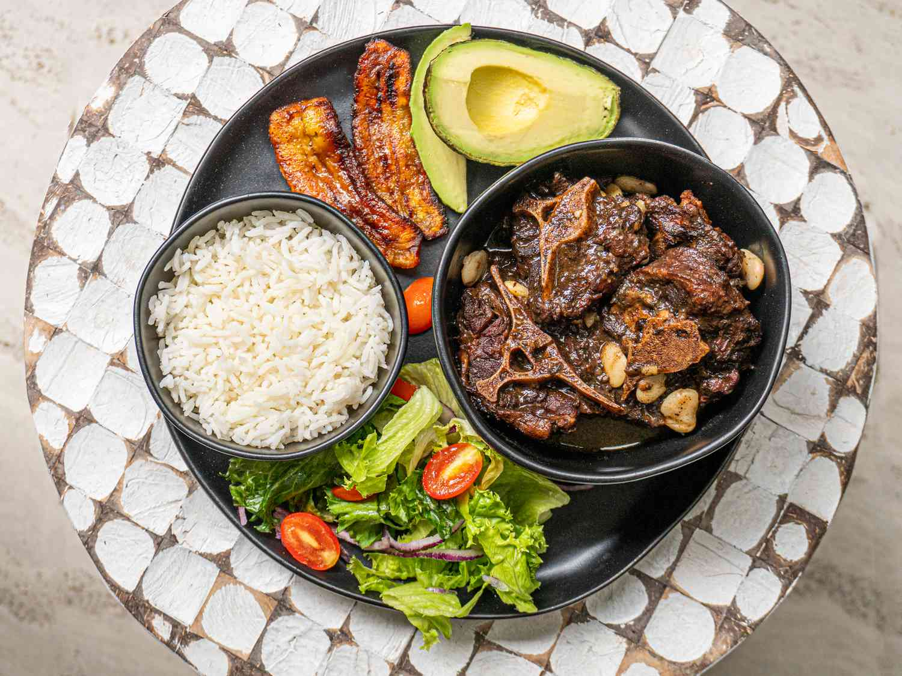

Oxtail Stew With Butter Beans

Description
Oxtail stew with butter beans is one of Jamaica’s most beloved comfort
foods. Slow-cooked until the meat is fall off the bone tender, this hearty
stew is rich, flavorful, and deeply satisfying. The butter beans soak up
the savory gravy, adding creaminess and balance to the bold spices. Served
with rice and peas or white rice, it is a true yaad classic that brings
warmth to any table.
Prep time: 30m
Cooking TIme: 3h 30m
Ingredients
- 3 pounds oxtail
- 2 medium onions
- 4 medium carrots
- 1 clove garlic
- 1 cup tomatoes
- 4 teaspoons cornflour
- 1 teaspoon salt
- 2 tablespoons black pepper
- 1/4 cup vegetable oil
- 4 rashers streaky bacon
- 8 cups hot water
- 2 stalks escallion
- 1 sprig thyme
- 2 cans butter beans
Directions
-
Cut the oxtail into bite-sized pieces, slice the onions and carrots,
crush the garlic, chop the tomatoes, and finely chop the escallion.
-
Trim away any excess fat and scald the oxtail pieces in boiling water
for 2–3 minutes. Pat dry with absorbent paper, coat with cornflour, and
season with salt and black pepper.
-
Heat oil in a heavy-bottom pot and brown the oxtail on all sides. Pour
off any excess oil.
- Dice the bacon and fry for a few minutes.
-
Return the oxtail to the pot with the bacon, along with the carrots,
onions, garlic, tomatoes, and hot water.
-
Cover and simmer gently for about 3 hours, or until the oxtail is almost
tender. (A pressure cooker can be used to reduce cooking time.)
- Add more liquid if needed and adjust the seasoning.
- Cover and simmer for an additional 20–30 minutes.
- Stir in the butter beans and heat through before serving.
To serve
Serve hot with white rice, rice and peas, or ground provisions, with fried
plantain and a fresh vegetable salad on the side.
Home